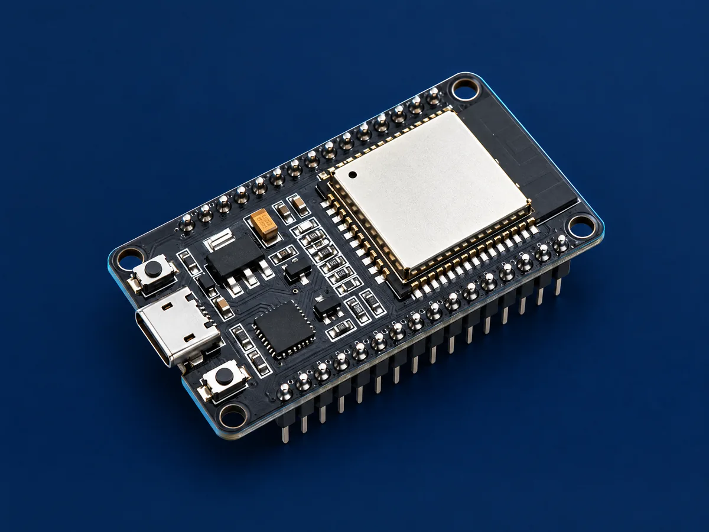
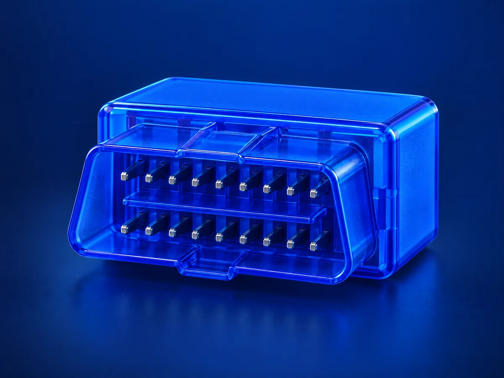

Explora una representación interactiva del programa DCESP32-OBDC2. Recorre sus siete pantallas y mueve los controles: el tablero, los sensores y las gráficas cambiarán con valores inventados para esta demostración.
La simulación funciona en el navegador y no requiere hardware. Para ejecutar el firmware real sí necesitas los componentes descritos más abajo.
Solo demostración: no es un escáner, no lee sensores del auto y no debe usarse para tomar decisiones de reparación.
¿Qué hace cada pieza?
ESP32 + adaptador ELM327
Ilustraciones genéricas: el modelo y la apariencia del hardware pueden variar.

ESP32 · ejecuta el firmware
Es el microcontrolador que corre el sketch y aloja el panel web en su propia red Wi-Fi local. El teléfono se conecta a esa red para abrir la interfaz del dispositivo.
La placa exacta compatible depende del hardware y la compilación del proyecto.

ELM327 Bluetooth · enlace OBD-II
Se conecta al puerto OBD-II del vehículo y actúa como interfaz para las consultas compatibles que envía el firmware, como PIDs, códigos DTC y VIN.
La compatibilidad varía entre adaptadores ELM327 y vehículos; la imagen es ilustrativa, no una recomendación de compra.
Para ver esta página
Solo necesitas el navegador. Todo dato y acción de la demo se genera localmente; no se hacen solicitudes al ESP32.
Para usar el programa real
Necesitas una placa ESP32 compatible, un adaptador ELM327 Bluetooth compatible y un vehículo con puerto OBD-II. Descarga el ZIP del repo y sigue el README: requiere Arduino ESP32 core 2.0.17 y partición Huge APP.
DCESP32-OBDC2 · panel de muestraSIN CONEXIÓN REAL
LECTURAS FICTICIAS · NO ENVÍA COMANDOS · NO DIAGNOSTICA
01 / PANEL AUTOMOTRIZ
Automóvil · vista de muestra
Instrumentos simulados; no hay vehículo conectado.
ESTADO DEMO · ACTIVA
850RPM · demo
Motor
Revoluciones
ESCALA ILUSTRATIVA
El valor se mueve con el acelerador simulado.
0km/h · demo
Vehículo
Velocidad
ESCALA ILUSTRATIVA
Este indicador no mide el movimiento del auto.
Temperatura refrigerante88.0 °C
Voltaje simulado14.1 V
Bluetooth / ELM327NO CONECTADO
Muestras de esta sesión0
Avisos simulados: no se han generado alertas ficticias.
02 / LECTURAS OBD-II
Tablero · 13 PIDs
Son los nombres de sensores configurados en el firmware; todos los valores son ficticios.
MUESTRA LOCAL
Unidades elegibles en Ajustes: km/h o mph, °C o °F y kPa o psi. Ninguna preferencia se envía al ESP32.
03 / TENDENCIAS
Gráficas · hasta 4 señales
Selecciona hasta cuatro sensores; cada gráfica usa la escala propia de esa señal.
Las curvas se dibujan a partir del historial temporal ficticio de esta pestaña.
04 / ORIENTACIÓN
Asistente · ejemplo local
El firmware contiene un asistente de alertas y controles de voz; aquí solo se muestran respuestas fijas.
NO USA MICRÓFONO
Prueba una respuesta
Toca una opción. Esta demostración no graba audio ni interpreta fallas reales.
Respuesta de muestra
Elige una opción para mostrar una respuesta estática de ejemplo.
05 / FALLAS Y VEHÍCULO
DTC y VIN · ejemplos
Códigos ficticios para enseñar el aspecto de la pantalla, no fueron leídos de un automóvil.
NO DIAGNÓSTICO
Estado de consultaLISTO · DEMO
Luz MIL simuladaMUESTRA ENCENDIDA
Cantidad de muestra2 · FICTICIOS
VIN del vehículo
NO CONSULTADO · DEMO
No se envía una consulta al vehículo y no se genera un VIN válido.
Atención: “Limpiar” elimina códigos únicamente de esta pantalla demostrativa. Nunca llama al comando OBD-II para borrar fallas.
06 / AJUSTES
Configuración visual
El firmware real valida y guarda estos ajustes en el ESP32; esta página solo cambia lo que ves.
NO SE GUARDA EN HARDWARE
Preferencia visual del tablero.
Se aplica al refrigerante, admisión y aceite.
Solo cambia el MAP visible.
No corresponde al periodo real de consulta.
4000 rpm · valor inicial descrito en el firmware.
99 °C · solo vista de demostración.
Nombre de ejemplo; editarlo aquí no cambia el punto de acceso.
Campo ilustrativo. No hay emparejamiento Bluetooth.
Por seguridad, esta página no pide ni guarda contraseñas Wi-Fi.
07 / REGISTRO · HISTORIAL
Muestras de esta sesión
El programa real conserva lecturas/eventos en el navegador. Esta demo solo las mantiene en memoria mientras está abierta.
Muestras simuladas0
EstadoSOLO DEMO
AlmacenamientoEN MEMORIA
Los archivos exportados incluyen un aviso de que sus datos son ficticios. Cerrar o recargar la página elimina el historial temporal.
Para el proyecto real
Descarga el código y sigue sus instrucciones
El ZIP contiene el firmware, las herramientas y la documentación. Lee el README antes de compilar y verifica la compatibilidad del hardware.
Requisito resumido: un ESP32 compatible, ELM327 Bluetooth compatible, un vehículo OBD-II y Arduino ESP32 core 2.0.17 con partición Huge APP. Con el firmware real, conecta el celular al Wi-Fi local configurado en el dispositivo y abre http://192.168.4.1. Haz pruebas solo con el vehículo estacionado.